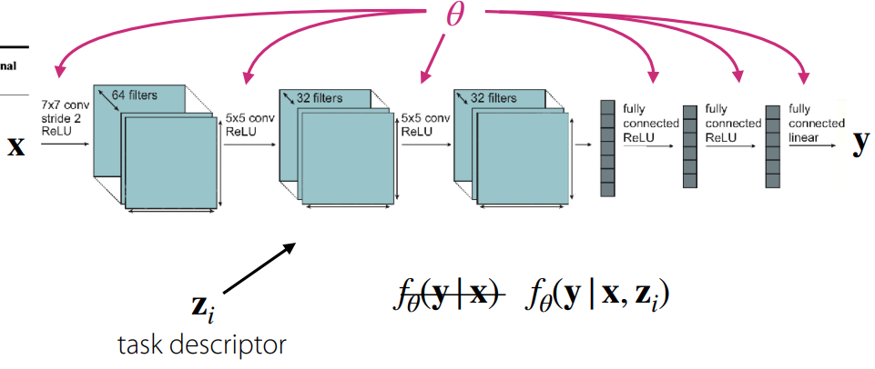
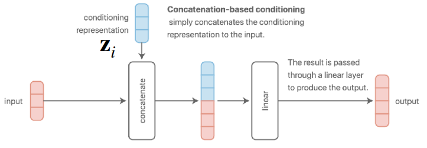
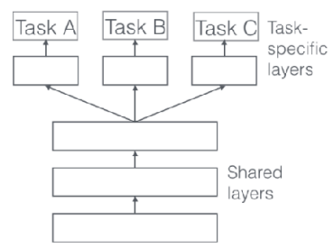
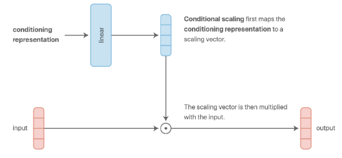
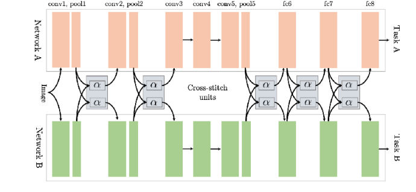
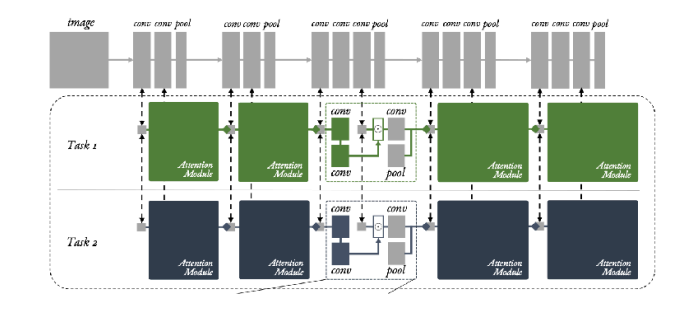
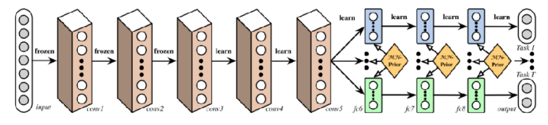
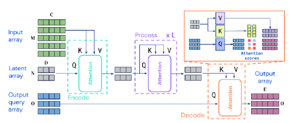
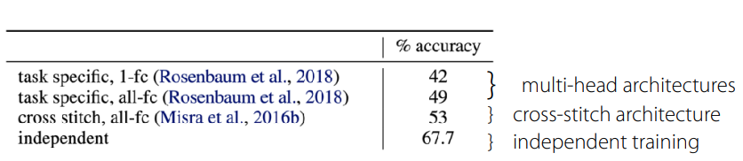
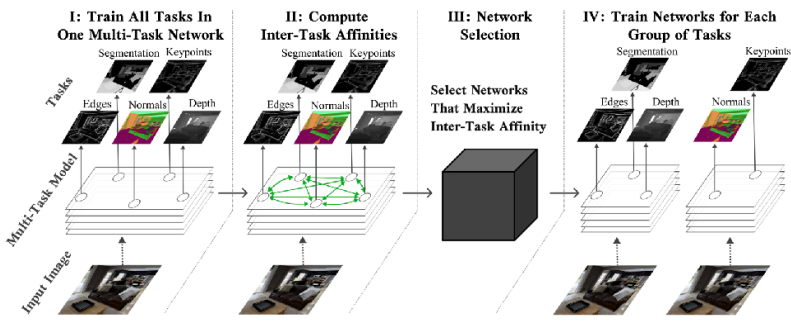

강의 및 자료


포스트에 소개되어 있는 자료는 강의 자료에서 따왔습니다.
Definition of Task
강의에서 소개하고 있는 task의 정의는 다음과 같다.
\[ \mathcal{T}_i \triangleq \{p_i(x), p_i(y \vert x), \mathcal{L}_i\} \tag{1}\]
이 수식은 특정 task \(\mathcal{T}_i\)가 지금까지 많이 다뤄졌던 single-task learning과 같이 단순한 데이터 덩어리가 아니라, 각 세가지의 핵심 요소의 집합으로 정의된다는 것을 의미한다. 우선 \(p_i(x)\) 는 주어진 task에서 나오는 문제의 형태 (Input Distribution)가 된다. 엄밀히 말하면 \(p\) 자체가 데이터의 분포가 될텐데, 이미지나 텍스트같은 모델에 입력되는 데이터 \(x\)가 어떤 특성을 가지고 생성되는지를 나타낸다. 예를 들어서 여러 언어의 필기체를 인식하는 문제가 주어져 있을 때, 영어 문장을 구성하는 이미지의 생김새와 한글 문장을 인식하는 이미지가 생김새가 완전히 다르기 때문에, (즉, \(x\)가 다르기 때문에) 이 경우는 \(p(x)\)가 서로 다른 케이스가 될 것이다.
두번째 요소인 \(p_i(y \vert x)\)는 주어진 문제에 대한 정답은 무엇인가 (Label Distribution)를 정의한다. 앞에서 정의한 것처럼 주어진 문제를 표현하는 \(x\)에 대해서 정답 레이블인 \(y\)에 대한 확률 분포를 표현한 것이고, 쉽게 말하면 입력을 보고 정답을 매기는 “규칙”이 되겠다.
마지막 요소인 \(\mathcal{L}_i\)은 흔히 통용되는 표현인 손실함수인데, 어떤 모델을 학습시킬 때는 해당 모델에게 잘했는지 못했는지에 대한 점수를 정의한 것이다. 결과적으로 모델이 주어진 입력에 대한 예측값을 구했을 때, 이를 실제값간의 차이를 토대로 얼마나 잘했는지 여부를 결정하게 된다. 물론 이 부분은 task마다 계산하는 방식이 다르게 될 것이다. 예를 들어서 어떤 task는 분류 문제를 해결해야 하고, 다른 task에서는 회귀 문제를 풀어야 한다면 각 task마다 정의되어야 할 손실함수는 다를 것이다.
그래서 이 수식이 설명하는 것은 앞에서 설명했던 것처럼 task를 어떤 단순한 데이터셋으로 정의하지 말고, 하나의 분포(Distribution)으로 봐야 한다는 부분이다. 그래서 모델이 단순히 데이터셋 자체를 암기하는 것을 넘어서 task의 근본적인 분포를 배워 새로운 데이터에서도 잘 적응(Generalization)할 수 있는지를 평가하는 것이 중요하다.
Single-task vs. Multi-task


Single-task를 다루는 모델과 multi-task를 다루는 모델간의 근본적인 차이는 해결해야 할 task를 어떻게 정의하고 입력으로 받느냐에 따른 것이다. 그림 1 (a) 에서 보듯이, Single-task를 다루는 모델의 경우는 단일 데이터셋에 대한 손실함수를 최소화하는 parameter \(\theta\)를 찾는 것이 목적이다. 이 경우 모델은 입력 데이터 \(x\)만 보고 \(y\)를 추론하는 \(f_{\theta}(y \vert x)\)의 형태를 가진다. 참고로 여기에는 하나의 가정이 포함되어 있는데, 훈련 데이터와 테스트 데이터가 동일한 분포에서 추출되었다는 가정이 녹아져 있다. 이때는 task에 대한 정보를 따로 넣어주지 않기 때문에 다른 표현으로는 task-agnostic이란 이름으로 정의하기도 한다.
반면, Multi-task를 다루는 모델의 경우 여러 개의 task \(\mathcal{T}_i\) 집합을 동시에 학습한다. 여기서 각 task는 앞에서 소개한 방정식 1 에 정의되어 있는 세가지 요소로 구성된다. 여기서 이전의 single-task와 구분되는 큰 특징 중 하나는 바로 task descriptor \(z_i\), 쉽게 말해서 현재 수행해야 할 task가 어떤 것인지에 대한 정보를 부가적으로 입력해준다는 것이다. 그래서 모델의 형태도 \(f_{\theta}(y \vert x, z_i)\) 로 정의되어, 다중 task에 대한 손실함수를 최소화하는 parameter \(\theta\)를 찾는 것이 목적이 된다. 강의 자료에서는 아래와 같이 표현했다.
\[ \min_{\theta} \sum_{i=1}^T \mathcal{L}_i (\theta, \mathcal{D}_i) \]
그러면 task descriptor \(z_i\)는 어떻게 졍의하나가 multi-task의 관건이 될텐데, 사실 학습하기 나름이다. 뭔가 task에 대한 정보를 숫자로 표현해서 다르다는 것을 표기하려면 그냥 정수 형태로 구분지어도 되고, 혹은 one-hot vector의 형태로 부여할 수 있다. 아니면 사람이 정의하는 것처럼 언어 형태로도 정의할 수 있고, 뭔가 task에 대한 specification을 담은 정보를 줄 수도 있다. 이를 정의하는 문제도 역시 Multi-task 학습의 효율성 측면에서 고민해볼 부분이 되겠다.
여기까지 오면 이제 multi-task를 다루는 모델을 학습하기 위해서는 몇가지 정의할 부분이 생긴다. 크게
- \(z_i\)를 어떻게 정의하고, 조건을 구분할 수 있을까?
- 각각의 task의 학습을 위한 objective function은 어떻게 정의할 수 있을까?
- 여러 개의 objective function을 어떻게 최적화할 수 있을까?
로 나눌 수 있는데, 각 부분에 대해서 강의에서 소개하고 있다.
Conditioning on the task
먼저, task descriptor를 어떻게 정의하고, 모델 학습시 개별적으로 학습할 수 있을지에 대한 부분이다. 우선, 쉬운 이해를 위해서 task decriptor를 one-hot vector로 정의한다고 가정해보자. 그러면 모델을 만드는 입장에서 고민해볼 수 있는 부분은 과연 어떻게 하면 multi-task에 대응할 수 있는 모델을 task에 conditioning해서 학습시킬 수 있을까 하는 것이다.

가장 쉽게 생각해볼 수 있는 부분은 개별 Task에 해당하는 모델을 각각 학습시키고 출력단에서 conditioning하는 것이다. 그림 2 에서 보여지는 것처럼 쉽게 말해 multiplicative gating, 즉 task descriptor가 해당 Task일때만 해당 task로 학습시킨 network의 출력을 사용하는 방법이다. 물론 이 경우는 내부의 network 간의 parameter sharing은 발생하지 않고, 외부에서 바라봤을 때는 하나의 큰 network처럼 보이게 된다. 어떻게 보면 가장 간단하게 생각해볼 수 있는 multi-task 대응 방법이겠지만, 네트워크의 연산 효율성 측면이나 크기 측면에서는 고려되지 않는다.
그러면 또다른 극단적인 케이스으로는 task간 학습시 모든 parameter를 공유하는 구조도 생각해볼 수 있다. 단 그림 3 의 구조처럼 parameter는 공유하되, 출력이 나오는 FC Layer나 activation 쪽에서 task descriptor \(z_i\)를 concatenate하는 방식이 될 것이다. 이 경우, task내에 공통적인 요소, 앞에서 설명한 표현을 가져오자면 여러 개의 문제 중 정답에 대한 내면적인 규칙을 공유하는 형태가 되므로, 연산 효율성이나 크기 측면에서는 조금 더 고려해볼 여지가 생긴다.
그러면 이제 이렇게 parameter는 공유하는 구조로 잡는다면 모델 parameter \(\theta\) 도 공유 parameter \(\theta^{sh}\)와 task별로 구분되는 task-specific parameter \(\theta^{i}\)로 나눠서 표현할 수 있고, 이에 따라서 해당 모델의 objective function도 다음과 같이 바꿔서 표현할 수 있다.
\[ \min_{\theta^{sh}, \theta^1, \dots, \theta^T} \sum_{i=1}^T \mathcal{L}_i ( {\theta^{sh}, \theta^i}, \mathcal{D}_i) \]
사실 지금까지 multi-task를 대응하는 형태에 대해서 어떤 사전적인 배경지식없이 상식적으로 생각해볼만한 부분에 대해서 설명이 이뤄졌다. 여기까지의 결론으로는 뭔가 모델을 학습하는데 있어서 task descriptor라는 것이 필요하고, 과연 이 정보를 어떻게 conditioning해서 넣느냐에 따라서 parameter를 어떻게, 어떤 layer에서 공유하게 될지 결정하는 문제에 고민해봐야 된다는 부분이다. 그래서 다음 그림을 통해서 conditioning 방식을 통해 모델을 구성할 때의 구조에 대해서 공유해본다.




그림 4 (a) 와 그림 4 (b) 은 앞에서 소개한 구조이다. 전자는 input data가 들어갈때 task descriptor가 concatenate되는 방식이고, 후자의 경우는 layer를 거쳐서 나온 결과에 가산(additive)하는 방식이다. 굳이 의미를 부여하자면 Concatenation 방식은 입력단에서 정보를 합친 후, 모든 레이어의 파라미터를 공유하여 Task 정보를 처리한다. 단, 입력층의 Weight Matrix에서 Task Descriptor \(z\)와 연산되는 부분은 해당 Task 고유의 편향(Bias)으로 작용하게 된다. 그리고 additive 방식은 linear layer로부터 나온 bias vector에 task descriptor가 더해지기 때문에, task에 대한 representation 별로 다른 편향을 부여하고 구분지어줄 수 있다는 특성이 있다.
강의에서 언급한 내용 중 기억할 부분은 그림 4 (a) 나 그림 4 (b) 구조가 외형적으로는 다르게 보이나, 사실 수학적으로 살펴보면 완전히 동일하다는 점이다. 예를 들어서, concatenation 방식으로 정해서 어떤 입력 데이터 \(x\)와 task descriptor \(z\) 가 결합된 벡터인 \([x; z]\)가 있다고 가정했을 때, 이를 weight \(W_1, W_2\)에 곱해서 나온 결과는 \(W = W \dot [x; z] = W_1 x + W_2 z\) 의 형태가 되므로 결과적으로 additive 한 결과로 나온다. 물론 중간에 ReLU같은 nonlinearity가 가해진다면 표현력 측면에서는 차이가 발생할 수는 있으나, 수학적으로 계산되는 부분은 동일하다는 것을 확인할 수 있다.
이 밖에도 그림 4 (c) 에서 보이는 것처럼 가장 간단하게 task에 specific하게 layer를 두어 일종의 switch 방식처럼 모델의 활성화 영역을 제어하는 multi-head 구조 (Ruder (2017)) 도 있고, 이전의 additive 대신 multiplicative 방식으로 conditioning (그림 4 (d)) 해서 조금 더 task별로 layer의 표현력을 주어 generalization 측면에서 조금 이점을 가져오는 구조도 존재한다.
이 밖에도 multi-task를 대응하기 위한 모델 구조에 대한 연구는 현재도 활발하게 진행되고 있고, 강의에서도 일부 구조를 소개하고 있다.




사실 multi-task를 대응하는 모델 구조에 있어서 rule of thumb은 없다. task의 형태에 따라 잘 동작하는 구조도 있는가하면, 경우에 따라서는 오히려 single task 모델보다 성능이 열화되는 경우도 발생한다. 이는 우리가 해결하고자 하는 문제, 즉 task의 유형에 따라 달라지며, 어쩌면 intuition이나 domain knowledge가 필요할 수도 있다.
Objective function
이전의 Task의 정의 부분에서도 가장 간단하게 정의할 수 있는 multi-task의 objective function에 대해서 설명한 바 있다.
\[ \min_{\theta} \sum_{i=1}^T \mathcal{L}_i ( \theta, \mathcal{D}_i) \]
그런데 만약 해결하고자 하는 task의 유형중에도 어떤 task는 어렵고, 어떤 task는 쉽다던지 하는 난이도의 차이가 존재할 것이다. 물론 이와 같은 경우를 대응하기 위해서는 어려운 task에 대해서는 조금더 학습을 많이하고, 쉬운 task에 대해서는 적게 학습하는 형태의 가중치를 적용할 수 있을 것이다.
\[ \min_{\theta} \sum_{i=1}^T w_i \mathcal{L}_i ( \theta, \mathcal{D}_i) \]
그러면 task에 대한 가중치 \(w_i\)는 어떻게 부여할 수 있을까? 가장 쉬운 방법은 앞의 예시처럼 난이도에 따라서 importance나 priority를 부여하는 것이다. 여기는 당연히 계산하는 기준이 있을 것이다. 아니면 training 도중에 보여지는 학습 경향에 따라서 dynamic하게 \(w_i\)를 조절하는 방법도 생각해볼 수 있다. 강의에서는 두가지 주제에 대해서 소개하고 있는데, 우선은 Chen 기타 (2018) 에서 제안하는 gradnorm이란 기법을 사용하는 것이다. 만약 task별로 gradient를 계산했을 때, 유사한 magnitude를 가진 gradient들이 있을 경우 해당 방향으로 gradient descent를 통해 값을 계산하는 방식이다. 아니면 여러개의 Task에 대한 loss를 최소화하는 문제를 일종의 min-max 문제로 정의하여 최적화를 수행하는 것이다. \(\min_\theta \max_i \mathcal{L}_i (\theta, \mathcal{D}_i)\) 식을 풀어쓰자면, 가장 성능이 나쁜 task의 loss에 대해서 최적화하는 방법이 될 것이다. 해당 내용은 Kuhn, Shafiee, 와/과 Wiesemann (2025) 에서 Distributionally Robust Optimization (DRO) 라는 내용으로 소개되어 있다. 이 밖에도 task의 robustness나 fairness 관점에서도 objective function을 정의할 수도 있다.
Optimizing the objective
우선 앞에서 언급한 task별 가중치를 고려하지 않은 기본적인 objective function을 최적화하기 위한 과정은 다음과 같다.
일반적인 딥러닝 학습은 데이터셋에서 배치를 무작위로 추출하지만, multi-task learning에서는 두 단계의 샘플링 프로세스로 나눠서 진행한다. 먼저, task의 종류에 대한 미니배치를 샘플링한다. 이 단계에서는 전체 task의 집합 \(\mathcal{T}\) 중에서 학습에 사용할 task 들을 먼저 무작위로 뽑는다. 해결해야할 task의 범주가 작다면 전체를 다 사용해도 좋지만, 그 종류가 많다면 일부만 선택하게 된다. 다음으로는 샘플링된 task에 해당하는 데이터셋을 미니배치 샘플링하는 단계이다. 이렇게 두 단계로 나눠서 샘플링을 진행하는 이유는 샘플링 과정에서 발생할 수 있는 Data Imbalance 문제를 완화시키기 위해서다. 만약 task의 구분없이 모든 task에 대한 데이터셋을 무작위로 추출한다면, task 내에서도 방대한 양을 가진 task의 데이터셋은 그렇지 않은 task의 데이터셋보다 뽑일 확률이 상대적으로 높다. 이로 인해 task에 대한 bias가 발생할 수 있기 때문에, 이를 완화하는 방법으로 먼저 task에 대해 균등하게 샘플링함으로써, 데이터가 적은 task도 동일한 빈도로 학습 기회를 부여할 수 있다. 물론, 이전에 설명했던 가중치같은게 고려된다면 이런 샘플링 확률도 task별로 조절할 수 있다.
이후의 손실을 계산하고 최적화하는 단계는 일반적인 딥러닝 학습과정과 동일하다. 대신 한가지 고려해야 할 부분은 label에 대한 scale이다. 예를 들어서 어떤 Task는 -5 에서 5 사이의 값이 나오고, 다른 Task에서는 -100에서 100 사이의 값이 나온다면, 스케일이 작은 task는 거의 학습이 되지 않을 수도 있다. 특히 회귀(Regression) 문제나 강화학습의 보상(Reward)을 다룰 때에는 label에 대해서도 normalization을 취해 전체 task에 대한 loss의 scale이 어느 정도의 일관성을 가지도록 조절하는 것이 중요하다. 그래서 전체적인 과정을 요약하자면, 먼저 task를 샘플링하고, 그 다음 task에서 데이터를 샘플링한 후, 그 다음 label에 대한 normalization을 수행하는 것이 일반적인 관행이라고 강의에서 소개하고 있다.
Challenges
Single task와는 다르게 multi-task를 다루는 입장에서 기존과는 다른 문제점들이 존재한다. 강의에서는 Negative Transfer와 Overfitting, 그리고 task의 수에 대해서 언급했다.
Negative Trasfer & Overfitting

Multi-task CIFAR-10/100란 별도로 공식적으로 지정된 데이터셋이 아닌, 알려져있는 CIFAR-10/100 데이터셋을 Multi-task 형태로 변형한 형태이다. 일반적으로는 계층적으로 Task가 구분되며, 크게 Multi-class Classification과 Super-class Classification으로 나눠서 평가하는 형태로 되어 있다.
앞에서도 sharing에 대한 내용을 언급하긴 했지만, 항상 연산 효율성을 위해서 parameter를 sharing하는 것이 좋은 것은 아니다. Yu 기타 (2020) 논문에서도 Multi-task CIFAR-100 을 대상으로 한 실험에서 오히려 single task를 대상으로 한 independent network의 성능이 제일 좋았음을 보여주고 있다. (그림 6) 본래의 의도라면 task내의 정의하는 문제의 공통적인 요소를 찾기 위한 과정으로 sharing을 활용한 것이지만, 오히려 task 간의 특징을 잘 구분짓지 못하는 특성으로 인해 negative transfer가 발생하는 것이다. 이처럼 task간에 발생하는 cross-task inference나 모델이 개별 task별로 학습되는 경향의 차이로 인해 optimization 관점에서의 어려움이 발생한다. 또한 이로 인해서 Task에 대한 representation을 활용하기 위해서는 일반적으로 single task에 비해 모델 사이즈도 커지게 된다.
그래서 강의에서 소개한 개념은 soft parameter sharing 이란 방법이다.
\[ \min_{\theta^{sh}, \theta^1, \dots, \theta^T} \sum_{i=1}^T \mathcal{L}_i({\theta^{sh}, \theta^i}, \mathcal{D}_i) + \lambda \sum_{i'=1}^T \Vert \theta^i - \theta^{i'} \Vert \]
앞에서 소개한 concatenation이나 multiplicative 방식처럼 parameter를 전부 공유하는 hard parameter sharing과 다르게, soft parameter sharing에서는 task \(i\)와 task \(i'\)간의 값 차이 (여기에서는 L2 Distance를 사용했다)를 계산해서 각 task가 자신만의 parameter를 갖되, 다른 task의 parameter와는 너무 떨어지지않게끔 Regularization term을 추가한 것이다. 이렇게 하면 만약 task간에 유사한 task가 존재한다면, parameter가 비슷할수록 loss가 줄어드므로, 자연스럽게 parameter가 공유되고, 반례로 서로 상충되는 task가 있을 경우는 regularization loss를 감안하면서 loss를 최소화하는 방향으로 학습이 이뤄질 것이다. 이렇게 하면 task간의 parameter를 유동적으로 변경할 수 있다는 장점을 가지게 되는데, 한편으로는 각 task별로 별도의 parameter를 가지고 있음으로 인한 memory 사용량이 증가하고, 또한 regularization term에 대한 tuning도 별도로 이뤄져야 한다는 점도 염두해두어야 한다. 반대의 상황도 마찬가지이다. negative transfer가 아니고 오히려 task에 대한 overfitting이 발생한다면, parameter sharing을 적극적으로 고려할 필요가 있다.
보다시피 이렇게 multi-task에 대한 대응과 일반화 관점에서 고려하려 서로 상충되는 요소들이 있고, 여기에 대한 최적의 방법이나 closed-form solution은 없기 때문에 multi-task에 대한 구조에 대해서 고민은 많이 필요하다.
A Lot of Tasks
multi-task를 다루게 되면 task의 종류가 많은 경우가 발생한다. 그러면 학습 효율성 관점에서 봤을때, 모든 task에 대해서 다 학습하면 좋을지, 아니면 비슷한 task끼리 묶어서 학습시켜야 좋을지에 결정하는 것이 문제로 작용한다. 앞에서 언급한 negative transfer나 positive transfer 처럼 task간의 유사함을 사전에 알거나 수치적으로 판단할 수 있는 방법은 존재하지 않는다. task similarity는 단순히 task의 내용 뿐만 아니라 데이터셋의 특성, 적용해야 될 모델의 구조, optimizer, 학습의 진행 단계같은 것이 달리지기 때문이다. 대신 task의 유사성을 어느정도 approximation 하는 방법에 대한 연구가 이뤄지고 있다.


기본적인 개념은 전체 task를 포함해서 단일 모델을 한번 학습시키면서, 이때의 최적화 과정이나 gradient를 보고 어떤 task의 gradient가 유사한 방향으로 가는지를 파악하여 grouping을 하는 것이다. 강의에서는 두가지 논문을 소개했는데, Fifty 기타 (2021) 에서는 Task Affinity Grouping (TAG) 라는 Framework를 통해서 task간의 친화도 (inter-task affinities)를 계산하고 이에 따라 네트워크를 선택하는 방식을 언급했고, Xie 기타 (2023) 논문에서는 Language Model을 사전학습시키는데 있어 사용되는 task별 데이터의 혼합비율을 최적화하는 방법을 소개했다.
Summary
해당 강의에서는 multi-task learning의 이해에 필요한 task의 정의와 multi-task learning을 대응할 수 있는 기본적인 모델 구조, objective function, 그리고 이를 최적화할 수 있는 방법에 대해서 소개했다. 가장 핵심은 single task와 다르게 task descriptor라는 것을 활용하여 모델을 학습하되, task간의 상관관계를 고려해야 학습 효율성을 가져올 수 있다는 점에 대해서 정리했다.